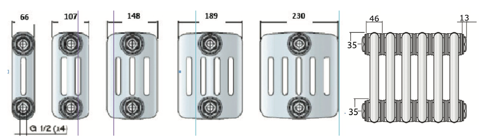
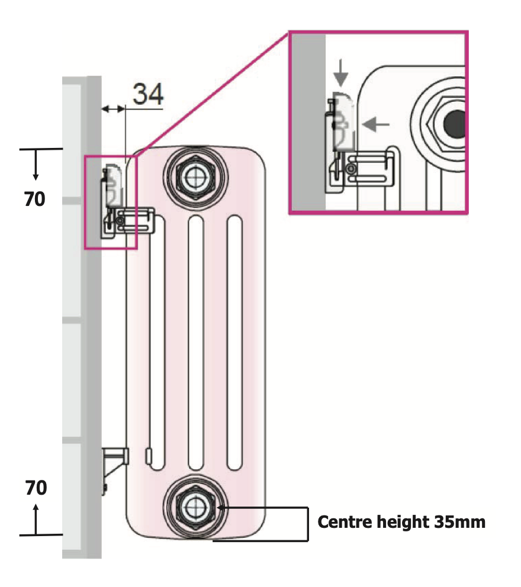

Универсальность
Подходят как для современных интерьеров, так и для ретро. Могут работать в многоквартирных домах с центральным отоплением.
Хотя стандартный стальной панельный радиатор является самым распространенным радиатором, установленным в гидравлических системах отопления, есть клиенты, которые занимаются симпатичной реставрацией старинной недвижимости или строят новый дом своей мечты с элементами исторического дизайна. Для таких объектов хорошо подойдут стальные трубчатые радиаторы, которые сочетают в себе вечную элегантность и стиль с максимальной производительностью.
Трубчатый стальной радиатор одинаково уместен как в современном, так и в традиционном интерьере, предлагая современную версию традиционного дизайна; трубчатая стальная колонна является по-настоящему универсальным радиатором. Трубчатые радиаторы сочетают внешний вид и тепло в одном превосходном продукте, изготовленном с большим вниманием к внешнему виду. Ключевой особенностью трубчатого радиатора является идеально гладкая блестящая поверхность.
Изготовленные из трубчатой стали, эти радиаторы представляют собой очень гибкий ассортимент, поставляемый в комплекте из секций высотой от 300 мм до 3 м, что позволяет их устанавливать как вертикально, так и горизонтально, в 2; 3; 4; 5 или 6 колонн.
Среди известных европейских производителей трубчатых радиаторов можно выделить IRSAP и Zehnder.
Для производства радиаторов используется высококачественная листовая сталь, поставляемая в виде катушек весом более 2 тонн и диаметром 1,5 метра, а также стальные трубы длиной от 4 до 6 метров, поставляемые в связках весом от 1 до 1,4 тонны. Все материалы соответствуют европейским нормам DIN и EN и проходят дополнительное тестирование на производстве.
Листовую сталь подвергают штамповке для создания коллекторных заготовок. Затем половинки коллектора свариваются вместе, образуя верхнюю или нижнюю головку секции радиатора. Лазерная сварка обеспечивает чистые и без окалин сварные швы. Все головки проверяются на герметичность и визуально оцениваются для контроля качества.
Коллекторные части и соответствующие трубки свариваются вместе. Специальный процесс сварки обеспечивает высокое качество продукции и эффективность производства. Сварные швы очищаются с лицевой стороны и между трубками для достижения чистого визуального качества. После сварки и обработки секции проверяются на герметичность. Шлифовка осуществляется автоматизированной системой, но качество контролируется вручную. Затем секции проходят испытание на герметичность под давлением 16 бар.
Секции радиатора свариваются между собой на специальной машине с использованием точечной сварки, обеспечивающей герметичность. Каждый радиатор проверяется на герметичность в водяных ваннах под давлением 18 бар. Испытанные радиаторы подвешиваются на автоматизированном конвейере и направляются на следующие этапы производства.
После испытаний радиатор очищается от пыли и грязи с помощью щелочной очистки. Затем радиатор погружается в ванну с электролитической грунтовкой для защиты от коррозии и подготовки к покраске. Радиатор помещается в печь, где грунтовка закрепляется при температуре 180 °C. Затем наносится порошковое покрытие, которое превращается в прочное покрытие при той же температуре. Это обеспечивает радиатору привлекательный внешний вид, защиту от механических повреждений и устойчивость к температурным изменениям.
На заключительном этапе радиатор проходит визуальный осмотр, чтобы проверить поверхность, дизайн и корректность идентификации модели. Если обнаруживаются дефекты, радиатор отправляется на доработку или отбраковывается.
Подходят как для современных интерьеров, так и для ретро. Могут работать в многоквартирных домах с центральным отоплением.
Автоматическое производство. Сборка путем сварки и не через ниппельные соединения. Порошковая краска.
Трубчатые радиаторы легки в уборке и подходят для установки в медицинских учреждениях, а также для квартир, где живут люди, страдающие аллергией.